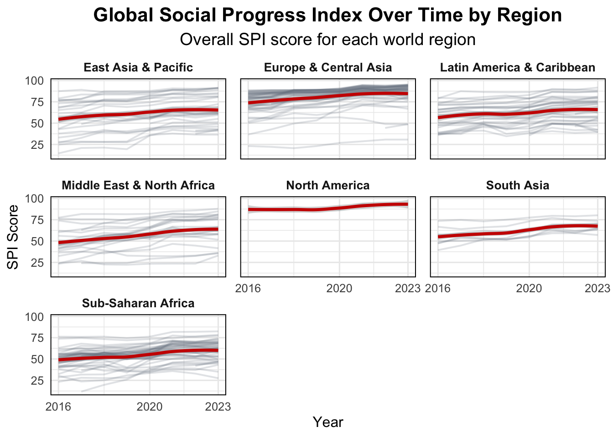

library(tidyverse)
library(tidytuesdayR)
library(here)
library(fishualize)Week 13 Tidy Tuesday
Introduction
Tidy Tuesday’s Homework
Tidy Tuesday is an international community of R enthusiasts that create visuals from the same dataset. The goal is to practice plotting and learn something new every week. It is amazing to see how many different ways you can visualize the same data.
Tasks To-Do
Load Libraries
Read the Data
tuesdata4 <- tidytuesdayR::tt_load('2025-11-25')
spi_indicators <- tuesdata4$spi_indicatorsLook at the Data
glimpse(spi_indicators)Rows: 4,340
Columns: 12
$ iso3c <chr> "DNK", "FIN", "POL", "SWE", "ESP", "NLD", "S…
$ country <chr> "Denmark", "Finland", "Poland", "Sweden", "S…
$ region <chr> "Europe & Central Asia", "Europe & Central A…
$ income <chr> "High income", "High income", "High income",…
$ year <dbl> 2023, 2023, 2023, 2023, 2023, 2023, 2023, 20…
$ population <dbl> 5946952, 5584264, 36685849, 10536632, 483733…
$ overall_score <dbl> 95.25583, 95.11542, 94.65375, 94.41000, 94.3…
$ data_use_score <dbl> 100, 100, 100, 100, 100, 100, 100, 100, 100,…
$ data_services_score <dbl> 98.46667, 96.43333, 97.30000, 96.00000, 91.2…
$ data_products_score <dbl> 90.71250, 90.96875, 84.54375, 90.57500, 92.6…
$ data_sources_score <dbl> 87.100, 88.175, 91.425, 85.475, 87.800, 83.6…
$ data_infrastructure_score <dbl> 100, 100, 100, 100, 100, 100, 100, 100, 100,…This data shows the Statistical Performance Indicators (SPI) to monitor the statistical performance of countries. It uses dimensions: (i) data use, (ii) data services, (iii) data products, (iv) data sources, and (v) data infrastructure. The dataset is made available through the World Bank via rfordatascience.
Clean the Data
spi_filtered <- spi_indicators %>%
filter(year >= 2016, year <= 2023) # only years between 2016-2023
region_means <- spi_filtered %>%
group_by(region, year) %>%
summarise(mean_overall = mean(overall_score, na.rm = TRUE)) # mean over all score just to show in plotTidy Tuesday Plot
# make a faceted plot by region
Week14_tt <- ggplot(spi_filtered,
aes(x = year, y = overall_score, group = country)) +
geom_line(linewidth = 0.7, alpha = 0.2, color = "#727E8B") + # countries faint
geom_smooth(data = region_means,
aes(x = year, y = mean_overall, group = NULL), color = "#cc0000", linewidth = 1.2) +
facet_wrap(~ region) + # facet plot by region
scale_color_fish_d(option = "Hypsypops_rubicundus") +
labs(title = "Global Social Progress Index Over Time by Region",
subtitle = "Overall SPI score for each world region",
x = "Year", y = "SPI Score") +
scale_x_continuous(breaks = c(2016, 2020, 2023)) + # only show these years on axis
theme_minimal(base_size = 12) +
theme(strip.text = element_text(face = "bold", size = 10),
plot.title = element_text(face = "bold", size = 16, hjust = 0.5),
plot.subtitle = element_text(size = 14, hjust = 0.5),
axis.titles = element_text(face = "bold", size = 14),
panel.spacing = unit(0.8, "lines"), # increase space between facets
panel.border = element_rect(fill = NA, linewidth = 0.7)) # border around each plot)
Week14_tt

Figure 1 shows a line plot of the overall SPI score from 2016-2023 (some indicators going back to 2004). Each country is shown and plots organized by world regions. Darker red line indicates the mean overall score and lighter lines represent all country’s overall score.
New Thing Learned
This Tidy Tuesday, I used Quarto markdown techniques to make the plot fit across the whole page and played around with the Quarto page layout.
Extra
# ggsave(here("Tidy_Tuesday","Week14_tidytuesday", "Output", "Week14_tt.jpg"))
# summarise some data
#spi_region <- spi_indicators %>%
# group_by(region, year) %>% # eg region, type
# summarise(mean_overall = mean(overall_score, na.rm = TRUE)) # calculate mean overall score
# To do before running code:
# Empty your environment before you start working
# Restart R
# .rs.restartR()
# remove whole list in environment
# rm(list = ls())